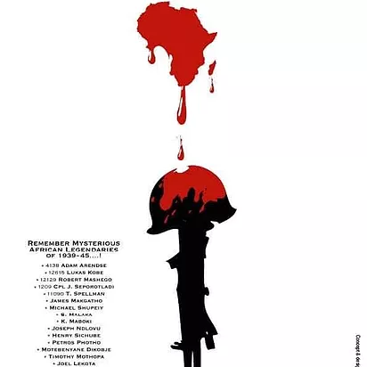

WALK OF DEATH memorial silent protest 2021
once again this year, we’re occupying the capiltal city of Germany through hosting our own #Memorial_Silent_Protest to hounor our ancestors.
Bear in mind that souls can talk through us and let's prove that by speaking eloquently for our dead: #Afrakan_Colonial_Soldiers and #Prisoners_Of_War_1939_45. My deep sense of being connected to the souls of our forebears, encourages me to continue with the struggle of defending and demanding justice on their behalf by indicating the importance of their contribution and words during the #world_wars and #de_colonize_history.
#Walk_of_Death is one of the horrors and crimes of colonialism that was buried by white supremacy. Afrakans were conscripted to fight and liberate Europe from fascism. Unfortunately, nothing was written in the historical books about their bravery and off course it was hidden by white leaders to maintain their white supremacy. Like in any other holocaust, someone risked his or her life to write the happenings of wars on their side as it was an obligatory for white leaders to erase the evidence.
Join us on Thursday, 28.10.2021 at Bundestag - Platz der Republik 1, 10557 Berlin, when we will be protesting silently holding poster, banners, flags and flyers surrounded by great souls that needs to be acknowledged, respectively honored through statutes, street names and their descendants to be adequately compensated as it was amended 76 years ago